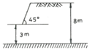

화약취급기능사 (2009-09-27 기출문제)
1과목: 화약 및 발파
1. 충격에 예민하나 마찰에 둔감하고 화염만으로는 점화하기 힘들며, 뇌관의 첨장약과 도폭선의 심약으로 사용되는 것은?
- 테트릴
- 니트로셀룰로오스
- 니트로글리세린
- 펜트리트
(정답률: 50%)

2. 암석의 특성에 따라 알맞은 성능을 가진 폭약의 선정방법으로 틀린 것은?
- 강도가 큰 암석에는 에너지가 큰 폭약을 사용해야 한다.
- 굳은 암석에는 정적효과가 큰 폭약을 사용해야 한다.
- 장공발파에는 비중이 작은 폭약을 사용해야 한다.
- 고온의 막장에서는 내열성 폭약을 사용해야 한다.
(정답률: 알수없음)
3. 암질지수(RQD)는 전체 시추 길이에 대한 회수된 몇 cm이상의 코어를 합한 길이의 비인가?
- 1cm
- 5cm
- 10cm
- 15cm
(정답률: 80%)
4. 계단식 발파에서 파쇄 입도에 영향을 미치는 요인으로 가장 거리가 먼 것은?
- 암반특성
- 비장약량
- 단위천공률
- 발파기 성능
(정답률: 알수없음)
5. 안내판을 천공예정 암반에 고정 시킨 후 천공하는 방법으로 번 컷(Burn cut)의 천공 시 단점을 보완한 심빼기 발파법은?
- 팬(fan) 컷
- 코로만트 컷
- 피라미드 컷
- 노르웨이 컷
(정답률: 알수없음)
6. 소할 발파(secondary blasting)법 중 암석 외부의 움푹 파헤쳐진 부분에 폭약을 장전하고 점토 등으로 두껍게 그위를 덮은 다음 발파하는 방법은?
- 복토법
- 천공법
- 제발법
- 사혈법
(정답률: 알수없음)
7. 다음 중 니트로셀룰로오스(면약)에 대한 설명으로 맞는 것은?
- 아세톤에는 용해되지 않고, 에테르에 용해된다.
- 건조한 니트로셀룰로오스는 30℃ 이상의 온도에서도 운반할 수 있다.
- 햇빛, 산, 알칼리에 자연 분해되지 않는다.
- 질산기의 수에 다라 강면약과 약면약으로 구분한다.
(정답률: 82%)
8. 화약류의 타격감도를 확인하기 위한 낙추시험에서 임계폭점은 폭발률 몇 %의 평균높이를 의미하는가?
- 25%
- 50%
- 75%
- 100%
(정답률: 80%)
9. 다음 화약류의 혼합성분 중 예감제에 속하는 것은?
- NaCl
- KClO3
- Na4B4O7
- DNN
(정답률: 62%)
10. 다음 중 무역화약을 용도에 의해 분류할 떄 해당하는 것은?
- 발사약
- 기폭약
- 폭파약
- 전폭약
(정답률: 알수없음)
11. 전기뇌관을 사용한 병렬식 결선방법의 장점으로 틀린 것은?
- 불발된 뇌관 또는 위치발견이 용이하다.
- 전원으로 동력선, 전등선의 이용이 가능하다.
- 전기뇌관의 저항이 조금씩 달라도 상관없다.
- 대형발파에 이용된다.
(정답률: 알수없음)
12. 천공지름 25mm의 발파공을 공간격 9cm로 하여 3공을 집중발파하였을 때 저항선의 비를 구하면 얼마인가? (단, 장약길이는 구멍지름의 12배로 한다.)
- 0.96
- 1.76
- 1.85
- 2.09
(정답률: 알수없음)
13. 균질한 경남의 내부에 구상의 장약실을 만들고 폭발시켯을 때 암석 내부의 파괴상황을 장약실 중심으로부터 순서대로 올바르게 나열한 것은?
- 분쇄 - 소괴 - 대괴 - 균열 - 진동
- 분쇄 - 소괴 - 균열 - 진동 - 대괴
- 진동 - 균열 - 대괴 - 소괴 - 분쇄
- 균열 - 진동 - 소괴 - 대괴 - 분쇄
(정답률: 알수없음)
14. 다음 중 단위무게에 대한 폭발열을 높이고, 폭발 후 일산화탄소의 생성을 막기 위해 기폭약인 뇌홍에 배합하여 주는 것은?
- DDNP
- NaNO3
- KClO3
- NH4NO3
(정답률: 알수없음)
15. 다음 중 집중 발파의 목적에 해당하는 것은?
- 최소저항선의 증대
- 발파 공경의 증대
- 신자유면의 증대
- 장약 길이의 증대
(정답률: 알수없음)
16. 다음 중 폭발온도와 비에너지 값이 가장 큰 폭약은?
- 니트로글리콜
- 테트릴
- 펜트리트
- TNT
(정답률: 알수없음)
17. 어떤 현장 모래의 습윤밀도가 1.80g/cm3, 함수비가 32.0%로 측정되었다면 건조밀도는?
- 0.65g/cm3
- 0.95g/cm3
- 1.36g/cm3
- 2.72g/cm3
(정답률: 64%)
18. 암반의 공학적 분류법인 RMR(Rock Mass Rating) 분류법의 기준 항목에 해당하지 않은 것은?
- 탄성파속도
- 절리면 간격
- 일축압축강도
- 지하수 상태
(정답률: 알수없음)
19. 다음 중 전기뇌관의 성능시험에 해당하지 않는 것은?
- 납판시험
- 둔성폭약시험
- 점화전류시험
- 탄동구포시험
(정답률: 73%)
20. 다음 그림과 같은 단순 사면에서의 심도계수는?

- 2.7
- 1.6
- 0.6
- 0.4
(정답률: 80%)
2과목: 화약류 안전관리 관계 법규
21. 시가지 주변 발파에서 발파 진동을 감소시키기 위한 방법으로 가장 적당한 것은?
- 제발발파 효과를 최대한 이용하여 발파한다.
- 많은 자유면을 조성하여 발파한다.
- 폭속이 높은 폭약을 사용하여 발파한다.
- 천공작업시 천공 방향을 주변 구조물로 향하게 하여 발파한다.
(정답률: 73%)
22. 약경 32mm, 약장 400mm인 2개의 약포를 사용하여 사상순폭시험을 실시하였더니 약포간 거리 200mm에서 두개의 약포가 완전히 폭발하였다. 이 폭약의 순폭도는 얼마인가?
- 2
- 6.25
- 12.5
- 20.25
(정답률: 73%)
23. 전색물(메지)의 구비 조건으로 적당하지 않은 것은?
- 틈새를 쉽게, 그리고 리 메울 수 있는 것
- 압축률이 작지 않아서 단단하게 다져질 수 있는 것
- 불발이나 잔류폭약을 회수하기에 안전한 것
- 정전기 발생을 방지하기 위하여 발파공벽과 마찰이 적은 것
(정답률: 알수없음)
24. 다음 중 조절발파 방법에 속하지 않는 것은?
- 프리 스플리팅(pre-splitting)법
- 더블 브이 컷(double V-cut)법
- 쿠션 블라스팅(cushion blasting)법
- 라인 드릴링(line drilling)법
(정답률: 알수없음)
25. 발파에 의해 발생되는 발파공해 중 비산의 원인으로 가장 거리가 먼 것은?
- 점화순서 착오에 의한 지나치게 긴 지발시간
- 천공시 잘못으로 인한 장약공의 분산
- 과다한 장약량
- 단층, 균열, 연약면 등에 의한 암석강도의 저하
(정답률: 43%)
26. 화약류관리보안책임자의 결격사유로 틀린 것은?
- 20세 미만인 사람
- 색맹이거나 색약인 사람
- 운전면허가 없는 사람
- 듣지 못하는 사람
(정답률: 알수없음)
27. 화약류의 소지허가는 누구의 허가를 받아야 하는가? (단, 허가없이 화약류를 소지할 수 있는 경우 제외)
- 행정안전부장관
- 경찰청장
- 주소지 관할 지방경찰청장
- 주소지 관할 경찰서장
(정답률: 31%)
28. 피뢰도선 및 가공지선의 전극 기준에 대한 설명으로 옳은 것은?
- 전극을 땅에 묻을 때에 그 부근에 가스관이 있을 경우에는 그로부터 2m 이상의 거리를 둘 것
- 전극은 피뢰도선마다 2개 이상으로 할 것
- 전극은 구리판 또는 그 이상의 전도성이 있는 금속으로 할 것
- 전극의 접지저항은 피뢰도선이 1줄인 때에는 20[Ω]이하로 할 것
(정답률: 57%)
29. 화약류를 양도ㆍ양수하고자 할 때 경찰서장의 허가를 받지 않아도 되는 경우가 아닌 것은?
- 제조업자가 제조할 목적으로 화약류를 양수하거나 제조한 화약류를 양도하는 경우
- 화약류의 수출입 허가를 받은 사람이 그 수출입과 관련하여 화약류를 양도ㆍ양수하는 경우
- 판매업자가 판매할 목적으로 화약류를 양도ㆍ양수하는 경우
- 화약류관리보안책임자가 현장 발파용으로 화약류를 양도ㆍ양수하는 경우
(정답률: 59%)
30. 전기뇌관에 대한 도통시험을 할 경우 시험전류는 몇 암페어를 초과하지 않는 것을 사용하여야 하는가?
- 0.1 암페어
- 0.01 암페어
- 0.001 암페어
- 1 암페어
(정답률: 64%)
31. 다음 중 화공품에 속하지 않는 것은?
- 테트라센 등의 기폭제
- 자동차 에어백용 가스발생기
- 시동약
- 실탄 및 공포탄
(정답률: 40%)
32. 화약류의 유리산 시험에 대한 설명으로 옳지 않은 것은?
- 시험하고자 하는 화약류를 유리산 시험기에 그 용적의 3/5 이 되도록 채우고, 청색리트머스 시험지를 시료위에 매달고 봉한다.
- 시료를 밀봉할 후 청색리트머스 시험지가 전면 적색으로 변하는 시간을 유리산 시험시간으로 하여 이를 측정한다.
- 폭약에 있어서는 유리산 시험시간이 4시간 이상인 것을 안정성이 있는 것으로 한다.
- 질산에스텔 및 그 성분이 들어있는 화약에 있어서는 유리산 시험시간이 5시간 이상인 것을 안정성이 있는 것으로 한다.
(정답률: 67%)
33. 화약류저장소 내에 화약류를 넣은 상자를 쌓아 저장할 때 저장소 안쪽 벽으로부터 이격거리 및 쌓는 높이는? (단, 수중저장소 및 3급저장소는 제외)
- 안쪽 벽으로부터 30cm, 높이는 2.0m 이하
- 안쪽 벽으로부터 20cm, 높이는 2.0m 이하
- 안쪽 벽으로부터 20cm, 높이는 1.8m 이하
- 안쪽 벽으로부터 30cm, 높이는 1.8m 이하
(정답률: 73%)
34. 화약류저장소가 보안거리 미달로 보안물건을 침범했을 경우 행정처분기준은?
- 허가취소
- 감량 또는 이전명령
- 6월 효력정지
- 3월 효력정지
(정답률: 73%)
35. 전기발파의 기술상의 기준에 대한 설명으로 틀린 것은?
- 전기발파기 및 건전지는 습기가 없는 장소에 놓고 사용전에 전력을 일으킬 수 있는 지를 확인할 것
- 발파모선은 고무 등으로 절연된 전선 20m 이상의 것을 사용할 것
- 전선은 점화하기 전에 화약류를 장전한 장소로부터 30m이상 떨어진 안전한 장소에서 도통시험 및 저항시험을 할 것
- 공기장전기를 사용하여 화약 또는 폭약을 장전하는 때에는 전기뇌관을 반드시 천공된 구멍 입구에 두도록 할 것
(정답률: 알수없음)
36. 신지층 퇴적 전에 조육운동과 침식작용이 있었음을 알려주는 부정합의 종류는?
- 비정합
- 준정합
- 사교부정합
- 난정합
(정답률: 알수없음)
37. 암석의 윤회에서 퇴적물이 퇴적암으로 되는 작용은?
- 풍화 작용
- 결정 작용
- 변성 작용
- 고화 작용
(정답률: 알수없음)
38. 화성암의 조암광물 중 무색광물에 속하지 않는 것은?
- 석영
- 사장석
- 백운모
- 휘석
(정답률: 50%)
39. 다음 중 쇄설성 퇴적암에 해당하지 않는 것은?
- 역암
- 각력암
- 고회암
- 집괴암
(정답률: 58%)
40. 절리의 특징에 대한 설명으로 틀린 것은?
- 단층, 습곡의 원인이 된다.
- 지표수가 지하로 흘러들어가는 통로가 된다.
- 풍화, 침식작용을 촉진시키는 원인이 된다.
- 채석장에서 암석 채굴시 절리를 이용하여 효율적인 작업을 할 수 있다.
(정답률: 60%)
3과목: 암석 및 지질
41. 퇴적암에서 여러 종류의 지층이 쌓여 이루어진 평행구조를 무엇이라 하는가?
- 건열
- 연흔
- 층리
- 편리
(정답률: 77%)
42. 접촉변성작용에 대한 설명으로 틀린 것은?
- 열에 의한 작용이다.
- 원인은 주로 마그마의 관입으로 생긴다.
- 범위는 마그마가 관입한 부분으로 좁은 편이다.
- 접촉변성작용을 받은 암석은 엽리가 발달하고 밀도가 커진다.
(정답률: 80%)
43. 마그마의 분화에 따른 고결 단계 중 최종 단계는 어느 것인가?
- 기성단계
- 열수단계
- 정마그마단계
- 페그마타이트단계
(정답률: 50%)
44. 다음 중 현무암에 대한 설명으로 틀린 것은?
- 화성암의 일종이다.
- 다공질 구조가 잘 나타난다.
- 산성암으로 검은색을 띤다.
- 제주도, 울릉도 등에 분포한다.
(정답률: 알수없음)
45. 현무암질 마그마가 냉각되면서 정출되는 광물 중 가장 높은 온도에서 정출되는 것은?
- 감람석
- 각섬석
- 휘석
- 석영
(정답률: 42%)
46. 다음 중 중생대에 속하지 않는 지질시대는?
- 백악기
- 쥐라기
- 데본기
- 트라이아스기
(정답률: 73%)
47. 광물 알갱이들을 육안으로 구별할 수 없는 화산암의 특징적인 조직을 무엇이라 하는가?
- 비현정질 조직
- 현정질 조직
- 입상 조직
- 등립질 조직
(정답률: 알수없음)
48. 다음 중 화성암에 대한 설명으로 맞는 것은?
- 지표에 노출되어 있는 암석들이 풍화와 침식작용을 받아서 생긴 암석을 말한다.
- 지하의 마그마가 지표에 분출하거나 지각에 관입하여 굳어진 암석을 말한다.
- 일단 형성된 암석이 지각변동에 의하여 압력이나 열을 받아서 생긴 암석을 말한다.
- 재결정작용에 의하여 파쇄되었던 암석들이 다시 모여 접촉변성을 일으켜 생긴 암석을 말한다.
(정답률: 73%)
49. 육안으로 변성암의 종류와 그 이름을 알아내기 위한 방법으로 맞는 것은?
- 쇄설성 조직, 층리, 화석을 관찰한다.
- 입상 조직, 반상 조직, 유리질 조직을 관찰한다.
- 편리, 편마 구조, 혼펠스 구조를 관찰한다.
- 쇄설성 조직, 편마 구조, 편리를 관찰한다.
(정답률: 46%)
50. 셰일이 접촉 변성작용을 받아서 생성된 암석은?
- 혼펠스
- 편마암
- 천매암
- 슬레이트
(정답률: 70%)
51. 다음 중 단층 양쪽 지괴의 상하운동이 가장 적은 단층은 어느 것인가?
- 정단층(normal fault)
- 역단층(reverse fault)
- 주향이동단층(strike-slip fault)
- 오버트러스트(overthrust)
(정답률: 알수없음)
52. 둥근 자갈들의 사이를 모래나 점토가 충진하여 교결케 한 자갈 콘크리트 같은 암석은?
- 쳐트
- 사암
- 역암
- 셰일
(정답률: 65%)
53. 퇴적물이 쌓인 후 단단한 암석으로 되기까지에 일어나는 모든 작용을 의미하는 것은?
- 속성작용
- 분급작용
- 변성작용
- 분화작용
(정답률: 알수없음)
54. 다음 중 불연속면의 주향과 경사를 측정하는데 주로 사용하는 것은?
- 레벨(level)
- 트랜싯(transit)
- 클리노미터(clinometer)
- 세오돌라이트(theodolite)
(정답률: 80%)
55. 석탄의 종류 중에서 탄소(C)의 함유량이 가장 낮은 것은?
- 갈탄
- 토탄
- 역청탄
- 무연탄
(정답률: 34%)
56. 점토와 미사크기의 입자로 구성된 암석으로서 미사암과 합하여 전 퇴적암의 55%를 차지하는 가장 흔한 암석은?
- 석회암
- 셰일
- 사암
- 응회암
(정답률: 알수없음)
57. 화성암 중에 SiO2를 몇 %를 함유하면 산성암이라고 하는가?
- 45% 이하
- 52% 정도
- 60% 정도
- 66% 이상
(정답률: 70%)
58. 다음 중 용암에 들어 있던 휘발성분이 분리되면서 굳어져 생긴 기공이 다른 광물로 채워져서 만들어진 구조는?
- 유상 구조
- 다공질 구조
- 행인상 구조
- 구상 구조
(정답률: 알수없음)
59. 변성암과 그 변성암에서 특징적으로 나타나는 구조의 연결로 틀린 것은?
- 편마암 - 편마구조
- 편암 - 편리구조
- 점판암 - 벽개구조
- 대리암 - 안구상구조
(정답률: 59%)
60. 습곡축면이 수직이고 축이 수평이며 두 날개는 반대방향으로 같은 각도로 경사진 습곡은?
- 정습곡
- 경사습곡
- 침강습곡
- 셰브론습곡
(정답률: 54%)